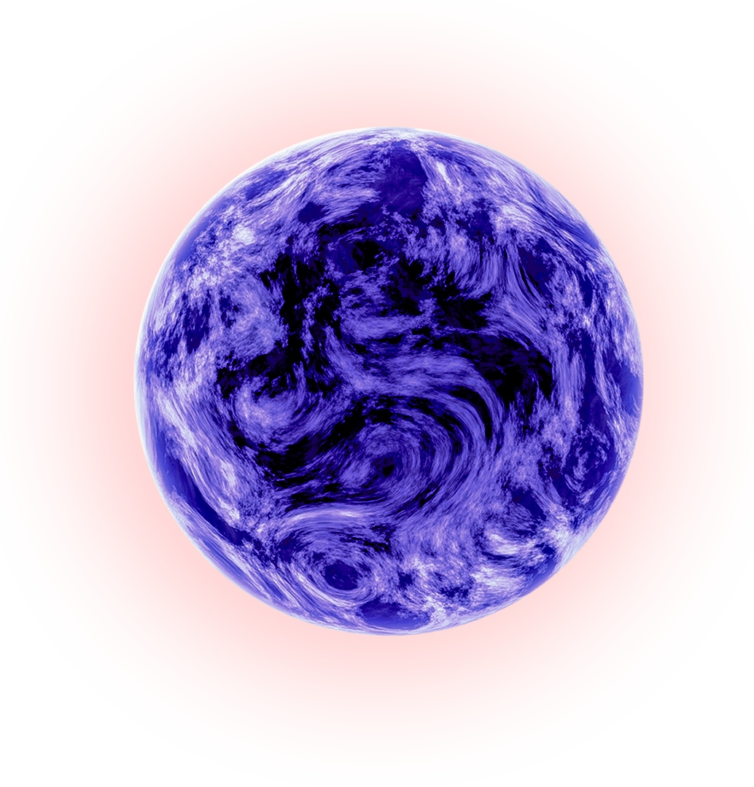
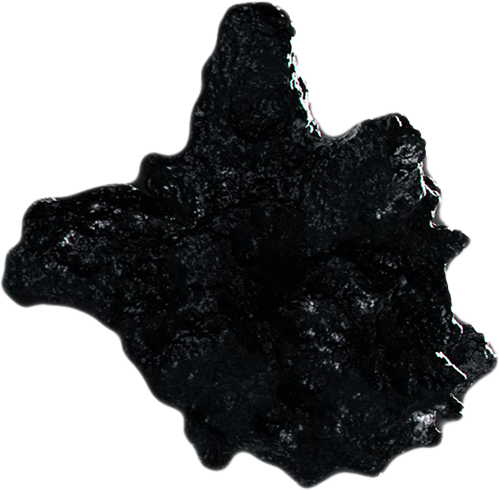
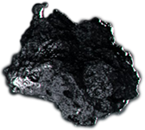
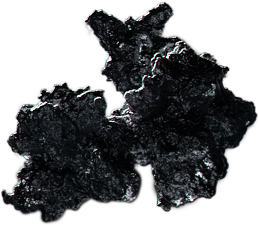
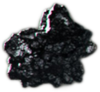

0%
Every click is a choice. Every scroll, a story.
This is not just development. It's controlled distortion.
Every click is a choice. Every scroll, a story.
This is not just development. It's controlled distortion.





Collecting data: ERROR
Index: 0,81
0V/0-8 Anomaly Field